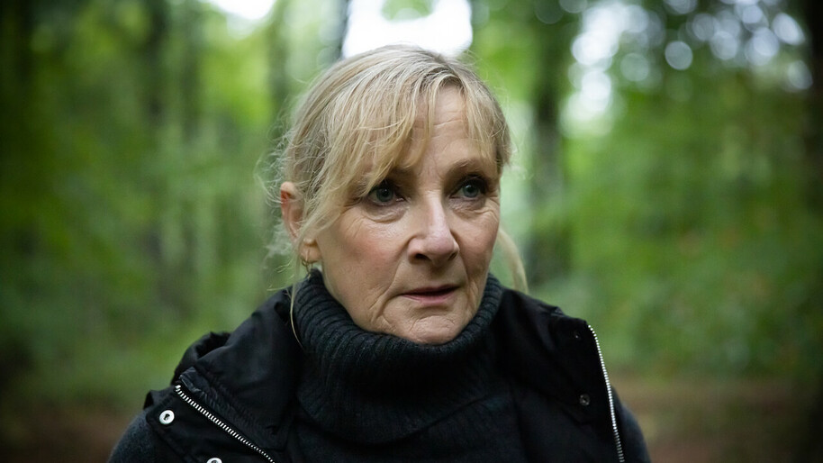

Abigail Cowen interpleta a fada Bloom em 'Fate: A saga winx'. A atriz americana tem 22 anos e estrelou a série 'sabrina', da netflix. Flora, uma das fadas da série original, vai ser interpretada por Paulina Chávez. A jovem atriz tem 19 anos e nasceu no Texas. Desde cedo, participou em peças de teatro amadoras, mas só ficou conhecida nacionalmente com um anúncio da Coca Cola. Apesar de já ter feito algumas pontas em séries, como “Endeavour” e “The Stranger”, aos 25 anos, Precious Mustapha teve sua grande estreia nas telinhas ao dar vida a Aisha ela nasceu dia 13 de Abril de 1997 e tem a nacionalidade britânica. Eliot Salt é a intérprete da personagem Terra na série ela nasceu no dia 18 de Janeiro de 1994 no Reino unido.Ela começou sua carreira profissional em 2019, mais ja havia passado por alumas produções antes,como "Gameface","Intelligence". Hannah van der Westhuysen nascida a 26 de Agosto de 1995 no reino unido, fez a Princesa stella na série.Ela começou sua carreira como atriz mirins na série CITV THE FUGITIVES. Danny Griffin fez o personagem sky na série, ele nasceu em Londres no dia 2 de julho de 1997.Ele começou sua carreira no palco numa produção de the railway children no kin's cross theatre de londres. 
LESLEY SHARP fez a personagem rosalind,ela nasceu dia 3 de Abril de 1960 e tem a nacionalidade britânica. Ela tem 22 anos de carreira e conta com 11 filmes e séries lançados. Frederick Nicholas Thorp, é um ator britânico que nasceu dia 7 Março de 1994, conhecido por No Limite (2017), Fate: A Saga Winx (2020) e Safe (2018). Elisha Applebaum, que tem 27 anos e nasceu no dia 9 de setembro de 1995 e é responsável por interpretar a Musa. Sua carreira começou em 2016 no filme “Mob Handed”, e chegou a fazer algumas participações em filmes e curtas. Sadie Soverall só tem 19 anos. A atriz nasceu no dia 17 de Janeiro de 2002 ela é de londres, na inglaterra e ainda mora na cidade com sua familia.